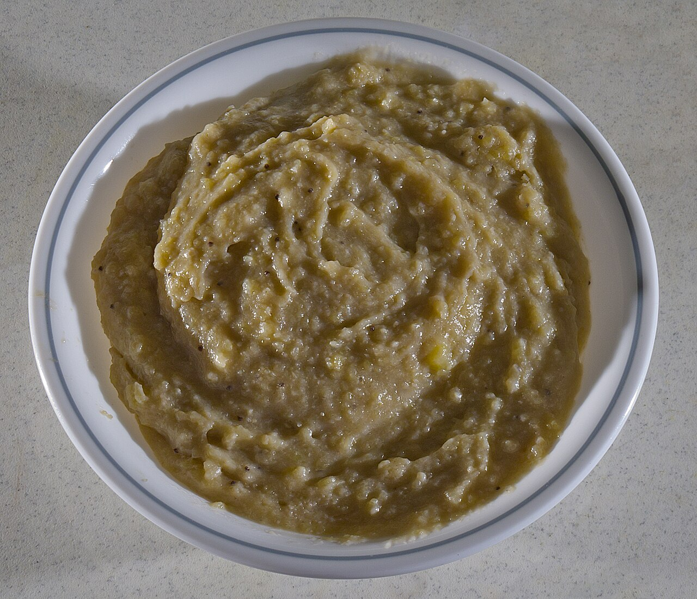
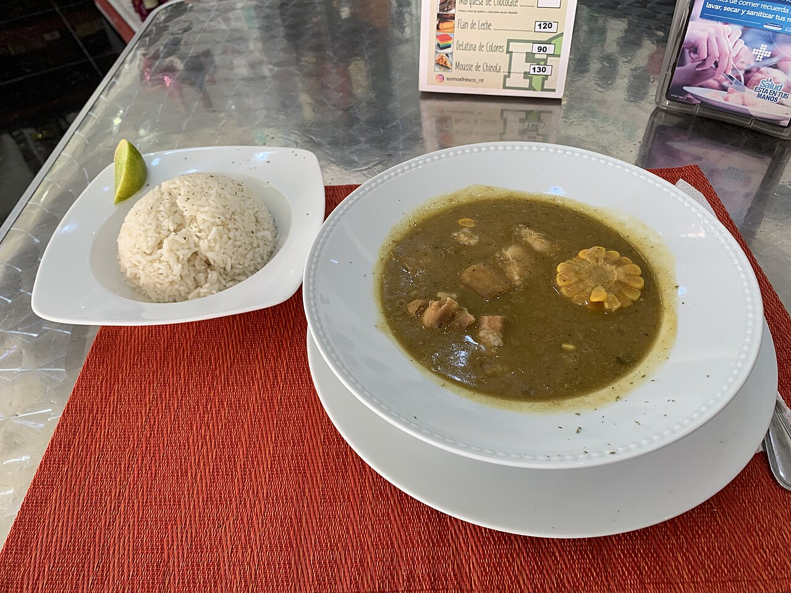
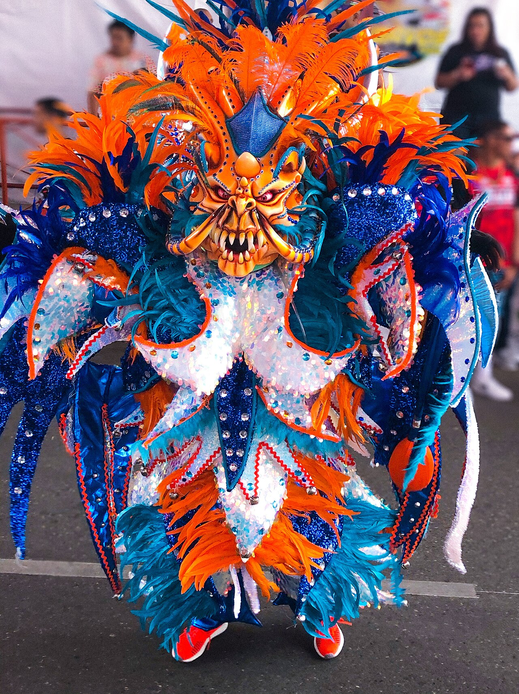
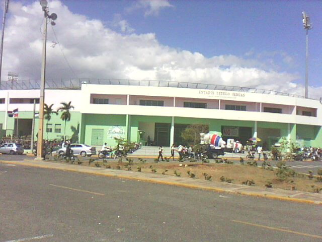

La Bandera
The national dish: white rice, stewed beans and meat, with salad and plantain.
Culture
A blend of Taíno, African and European roots you can hear, taste and feel.
At the table
The national dish: white rice, stewed beans and meat, with salad and plantain.

Boiled, mashed green plantain served with pickled onions, eggs, fried cheese and salami.

A thick stew of meats and root vegetables, made for Sundays and celebrations.
Green plantain slices fried twice, crispy and salty.
A creamy sweet-bean dessert, traditional during Holy Week.
A drink of rum, wine and honey left to steep in a bottle with tree bark and herbs.

Music and dance
Merengue was born in the 19th century and is danced as a couple, with simple steps and lots of energy. Its sound rests on the tambora, the güira and the accordion. Bachata, more romantic, grew out of rural neighborhoods and now plays around the world.
National passion
Baseball lives in every neighborhood: kids playing with homemade gloves, packed stadiums and famous names like Juan Marichal, Pedro Martínez, Sammy Sosa, David Ortiz and Albert Pujols.
Dominoes is the other national sport. It is played in yards, corner stores and sidewalks, usually in pairs, with lots of talk and tiles slammed on the table.
Play dominoes
History
Move the slider to travel through the key moments.
Talk like a local
Tap a word to reveal its meaning.